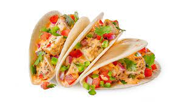

Odin Recipes

These fish tacos taste just like home. I'm from San Diego, but we live in the South now, and nobody has heard of fish tacos here! Serve with homemade pico de gallo and lime wedges to squeeze on top.
Ingredients
Beer Batter:
- 1 cup all-purpose flour
- 2 tablespoon cornstarch
- 1 teaspoon baking powder
- 1/2 teaspoon salt
- 1 cup beer
- 1 egg
White Sauce
- 1/2 cup plain yogurt
- 1/2 cup mayonnaise
- 1 lime, juiced
- 1 jalapeno pepper, minced
- 1 teaspoon minced capers
- 1 teaspoon ground cayenne pepper
- 1/2 teaspoon dried oregano
- 1/2 teaspoon ground cumin
- 1/2 teaspoon dried drill weed
Fish Tacos:
- 1 quart oil for frying
- 1 pound cod fillets, cut into 2 to 3 ounce portions
- 2 tablespoons all-purpose flour, or more as needed
- 1 (12 ounce) package corn tortillas
- 1/2 medium head cabbage, finely shredded
Directions
- Make beer batter: Combine flour, cornstarch, baking powder, and salt in a large bowl. Blend beer and egg in a separate bowl, then quickly stir into flour mixture until combined with a few lumps remaining.
- Make white sauce: Mix together yogurt and mayonnaise in a medium bowl. Gradually stir in fresh lime juice until consistency is slightly runny. Season with jalapeño, capers, cayenne, oregano, cumin, and dill.
- Start fish tacos: Heat oil in a deep-fryer to 375 degrees F (190 degrees C).
- Dust fish pieces lightly with flour. Dip into beer batter, then fry in hot oil until crisp and golden brown. Drain on paper towels.
- Lightly fry tortillas in hot oil until just crisped, but not too crisp. Drain on paper towels
- Place fried fish in tortillas; top with shredded cabbage and white sauce.